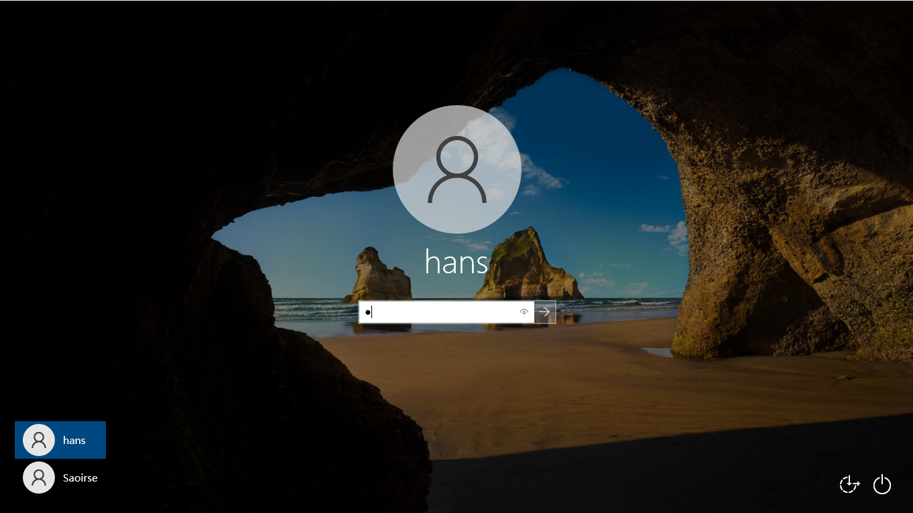
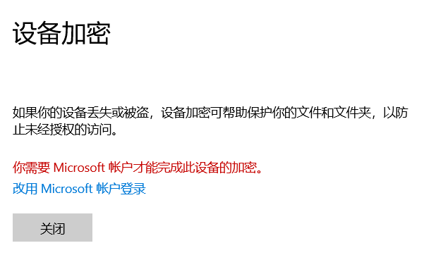

用户与微软账号
本章我们介绍 Windows 系统中的「用户」概念，以及微软账号的相关事项。看完这一部分，你或许可以找到这些问题的答案：
- 为什么我自己的电脑还有「用户」？
- 什么是微软账号（Microsoft 账户¹）？我为什么被要求注册 / 登录微软账号？
- 在 基本维护和安全防护 中提到的「UAC 弹窗」和「以管理员身份运行」究竟是什么？
- 登录微软账号有什么好处？
「用户」的概念是现代计算机操作系统的一个重要组成部分。尽管在今天，绝大多数电脑都仅为个人使用，「多用户」的理念似乎正渐渐模糊，但我们依然有必要了解这套机制的运作过程。
「用户」概念的产生
三十年前，「电脑」对于人们来说还是可望而不可得的「奢侈品」。在当时，只有在少数学校和科研院所，才能看到数量有限的电脑。在这样的情况下，自然免不了多人共用一台电脑来学习和工作。为了隔离每个人在电脑上保存的文件和偏好设置，「用户」这个概念便应运而生。
如同 QQ 之类的社交软件账号一样，在有「用户」概念的系统中，我们都可以在一台电脑上建立一个或者多个「用户」。在每次开机启动时，我们可以在用户列表中选择合适的身份身份来「登录」（下图左下角，图中选择的用户是「hans」）。

在这样的系统中，每个用户拥有自己独立的「用户名」和密码，每个用户在自己的用户文件夹（参见 文件与文件管理 的「用户文件夹」相关章节）内保存的文件都对其他用户不可见，且每个用户设置的桌面壁纸、颜色风格等都互不影响。在多用户系统的加持下，人们成功地实现了「一台电脑，多人在不同时段共用」这一目标。
时过境迁，电脑逐渐普及，成为了每个人工作和生活的必需品，那种「多人不得不共用一台电脑」的日子也渐渐成为历史。然而，「多用户」这一思想却一直流传下来，形成了今天电脑系统的标配。尽管今天的个人电脑大都真的只是「个人」电脑——由一个人使用，多用户系统依然在我们的系统中得以保留，并在权限控制等特殊方面起着非常重要的作用。
Windows 操作系统中的「用户」
在我们第一次启动 Windows 系统（参见 笔记本新机「开荒」指南 ）时，系统会要求我们新建一个用户，并设置它的用户名和密码，它将作为你自己所使用的用户²。打开 C:\用户\ 目录，你可以看到一个以它命名的文件夹，以及一个 公用 文件夹：

在那个以你的用户名为名的文件夹中，放置着你的用户文件和诸如「文档」「下载」等文件夹（如果你没有按照 文件与文件管理 中介绍的过程去迁移它们的话）。可以想象，假如这台电脑上还有另外的几个用户，那么在 C:\用户\ 将罗列着多个用户的文件夹。每个用户都只能打开属于自己的那个文件夹以及 公用 文件夹，从而实现了「多个用户资料的隔离」与「用户间资料的共享」。
在前文我们已经讲过，「文档」「下载」这样的文件夹是微软好心留给我们，帮助我们整理文件的。现在你应该能理解这样的「好心」了：Windows 本身就是一个为多用户设计的系统，从其他用户的角度考虑，用户的文件只有放在 C:\用户\<用户名>\ 这里才比较安稳——至于什么「这里是 C 盘，不适合放文件」，那微软才不管呢。
用户与权限，以及 Administrator
上文有说，今天保留多用户机制的一个很重要的原因，就是它能够更好地实现系统权限的分离。还记得 基本维护和安全防护 中提到的权限相关的知识吗？在这里，我们将对那里的叙述进行一些扩展。
系统之中，除了我们自己建立的用户之外，还存有一个 隐藏 的「超级用户」——Administrator（直译是「管理员」）。这个用户具有非常高的权限：更改系统关键设置、安装 / 卸载软件、创建新的用户、删除别的用户……甚至还可以「窥探」其他用户的文件。由于 Administrator 的权限太高、法术太强，Windows 系统便把它「封印」起来了——它不可见、不可登录，甚至不可感知。
而包括我们自己的用户在内的其他用户，都没有那么高的权限。事实上，我们在第一次开机时创建的那个用户，它的权限相当有限。单纯依靠我们那用户的力量，无法在 C 盘写入文件、不能安装卸载软件、更不可更改系统关键设置。在前文中我们提到，一个程序一开始执行时，只有有限的「权限」，造成程序权限低的根本原因，是因为打开这个程序的人——也就是我们自己——手头只有这么点权限。
但 Windows 为我们提供了一套「假手于人」的机制。Administrator 这个重量级用户是不能亲自下场的，但我们可以「借」它的身份来做事。还记得前文提到，右击一个程序选择【以管理员身份运行】，就可以赋予程序提升的权限吗？所谓的「以管理员身份运行」，就是「以 Administrator 的身份运行」；而 Administrator 有着很高的权限，我们就能以它的身份赋予程序高权限。那个「UAC 弹窗」的本质，就是某个程序在尝试借 Administrator 的身份来执行自己时系统弹出的警告。

在过去盗版、修改版系统横行的年代，许多国内盗版和修改版的 Windows 系统，会强行「解除」Administrator 用户的「封印」，并把它作为系统的默认用户。尽管这样，我们将不再见到有些恼人的「UAC 弹窗」（因为此时我们总是以最高的权限运行程序），但这时，我们相当于头上悬着一把「达摩克利斯之剑」在系统中四处穿行，其危险性可想而知。
本地帐户和微软账号
你用过手机上的「云服务」吗？近年来，诸如 iCloud、华为云服务、小米帐号这样的云服务在一定程度上提升了我们使用手机的便利程度。事实上，微软在 Windows 系统上也有着类似的服务：我们可以将系统中的用户和在线的「微软帐号」绑定，实现诸如同步等的各种附加功能。
为了和「已经绑定了微软帐号的用户」区分，我们把原先的传统的「用户」称为「本地帐户」。将本地帐户链接到微软帐号后，微软帐号的登录密码就会变成我们开机使用的密码（除此之外还可以设置额外的数字密码），微软帐号的用户名就变成了我们 显示在屏幕上 的用户名³。如果你原本使用的是本地帐户，打开【设置】→【帐户】，选择【改用 Microsoft 帐户登录】，按提示登录或者注册一个微软帐号即可完成绑定。

我们建议读者在自己的电脑上以微软帐号登录。将自己的本地帐户绑定微软帐号有着这些好处：
- 更多的用户相关功能，例如 Windows Hello 解锁。
- 电脑内的一系列微软自家 app，例如 Microsoft Store 和 Xbox 都将自动登录。
- 主题、壁纸和基本设置同步。这意味着，如果你有多台 Windows 电脑，那么设置会在这些设备中同步（可以手动关闭）。
- 跨设备剪切板。如果你有多台 Windows 电脑，那么在一台电脑上复制的东西（理论上）可以在另一台电脑粘贴。
你甚至可以为你的微软账号设置一个好看的头像，让电脑在开机时赏心悦目一点。- ……
设备加密与微软帐号 *
打开【此电脑】，观察你的磁盘图标上是否有挂锁图案。若有，请务必阅读这部分内容。

磁盘图标带挂锁图案，说明你的电脑启用了「设备加密」。一些商务本在出厂的时候会启用这个功能。这功能启用后，硬盘上的所有数据都是加密存储的，而那用来解密的，长达 48 位 的密钥，存储在电脑内部的一个安全芯片中。这个安全芯片会在电脑开机时检查系统安全情况——例如，开机过程中有无恶意软件作祟，电脑是否有被恶意开启并篡改过设置等。当这个芯片确认安全后，它就会向系统通报密钥并进行解密。整个过程中，用户看不到密钥。
在某些极端情况下，这个芯片可能产生「误判」。一旦它认为启动环境不安全，就会拦截启动过程，不再向系统通报密钥。这时你将会在开机时卡在这个画面：

可是，我们作为普通用户，从来没见过那 48 位长的「密钥」的真面目啊。这时，如果你使用过微软帐号来登录系统，那么你不必担心找不到这个密钥，微软会自动帮你把它备份到云端。你只需要打开 https://account.microsoft.com/devices/recoverykey 这个链接，按提示登录微软帐号，即可找到自己设备的 48 位密钥。虽然但是，谁愿意手打 48 位密钥啊。
如果你在新机配置时没有登录微软账号，电脑上的设备加密可能会处于「还差最后一块拼图」的状态，此时的磁盘图标会出现上图那样的黄色警告标志。而打开【设置】→【更新和安全】→【设备加密】，则会看到「你需要 Microsoft 帐户才能完成此设备的加密」的警告信息。

没错，这「最后一块拼图」就是将本地账户连接到微软账号。但此时系统整体的加密工作其实已经完成了，也就意味着电脑在使用时依然有概率陷入「输入恢复密钥」的尴尬场面。但因为你的账户不是微软账号，也就无从查找那「恢复密钥」，而设备加密采用的加密算法非常复杂，基本不可能硬破解，这时我们就只能尝试多次重启、排查造成芯片认为不安全的因素来尝试进入系统了。
所以，如果你的电脑启用了设备加密，请务必将本地帐户连接到微软帐号！
练习
- 查看自己的用户名，检查自己是以本地帐户登录的还是以微软帐号登录的。
- 检查自己的设备是否有启用设备加密。一般来说，只有部分品牌系列的「商务本」才会默认启用这个功能。
- 为什么说将 Administrator 作为主用户登录无异于悬着一把「达摩克利斯之剑」？
注释
- 注意，由于微软的疏忽，Windows 中多用「帐户」一词，然而正确的写法应是「账户」，但为了忠于原文，我们未作更改。
- 如果你在第一次开机时直接登录了微软帐号，那么系统会先用你的微软帐号的前 5 位作为用户名新建一个本地帐户
，然后你就会发现一个巨难看的本地用户名，然后迅速将它连接到你的微软帐号（参见后文）。整个过程对你来说完全无感。 - 本地存储的用户名是不会因为绑定到微软帐号而改变的。即，绑定前后，打开
C:\用户\看到的文件夹名字是一样的。